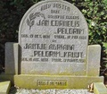
Jan Cornelis Pelgrim, *15-10-1851, +16-05-1921 en Jantje Adriana Kruijt, *18-08-1859, +17-03-1952, stam F
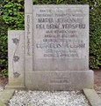
Cornelis Pelgrim, *14-04-1888, +03-04-1973 en Maria Johanna Verspuij, *27-08-1885, +06-06-1957, stam F
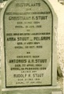
Christiaan R.Stuut, *11-05-1894, +18-08-1915, Anna Stuut-Pelgrim, *11-06-1864, +30-10-1929, Antonius A.H. Stuut, *22-04-1866, +10-02-1936, Rudolf H. Stuut, *21-12-1901, +17-01-1985 stam-F (Oude Alg.Begraafplaats Leerdam).
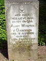
Aart Wouter van Gangelen, *19-11-1890, +20-10-1968 en Cornelia Maria Wilhelmina van Gangelen-Pelgrim, *03-03-1890, +16-06-1975, stam-F
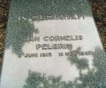
Jan Cornelis Pelgrim, *05-06-1913, +11-11-1987, stam F
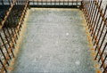
Johannes Christiaan Pelgrim, *17-11-1805, +11-01-1854, Johanna v.Arkel, *23-04-1805, +03-01-1840 stam-F (Oude Alg.Begraafplaats Leerdam).
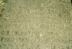
Paulus Floris Pelgrim, * 05-05-1817 Leerdam, +13-05-1900 Leerdam stam-F (Oude Alg.Begraafplaats Leerdam).
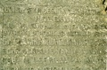
Elisabeth Gesina Catharina Pelgrim, * 02-11-1871 Leerdam, +03-10-1889 Utrecht stam-F (Oude Alg.Begraafplaats Leerdam).
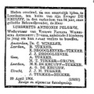
Lubbertus Anthonie Pelgrim, *21-01-1870, +30-04-1904, stam F.
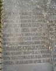
Paulus Floris Pelgrim, *05-05-1817, +13-05-1900, Elisabeth Elsje Siepia Catharina Joost, *16-07-1830, +24-08-1902, Lubbertus Anthonie Pelgrim, *21-01-1870, +30-04-1904, stam F
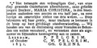
Maria Christina Pelgrim, *07-04-1815, +16-10-1831, stam F.
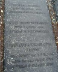
Catharina Wilhelmina Grijns, *30-01-1785, +06-03-1860, Maria Christina Pelgrim, *07-04-1815, +16-10-1831, Paulus Pelgrim, *20-04-1769, +10-09-1841 stam F
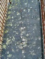
Geertje Willemina Pelgrim, *01-10-1812, +01-06-1896
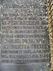
Catharina Wilhelmina Pelgrim, *24-07-1867, +24-09-1903, Elisabeth Gesina Catharina Pelgrim, *02-11-1871, +13-10-1889, Paulina Wilhelmina Anthonia Tukker, *01-01-1866, +16-10-1903 stam F
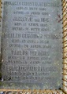
Johanna van Arkel, *23-04-1805, +03-01-1840, Jannetje van Dijk, *15-04-1814, +17-10-1854, Cornelis Gerardus Pelgrim, *12-07-1849, +23-04-1894, Gerrit Adrianus Pelgrim, *30-07-1833, +23-07-1908, Johannes Christiaan Pelgrim, *17-11-1805, +11-06-1854 stam F